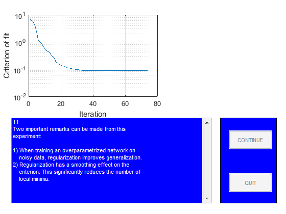

close all
StopDemo=0;
figure
guihand=gcf;
for k=1:1,
[guihand,edmulti,contbut,quitbut]=pmnshow;
set(guihand,'Name','Demonstration of regularization');
s0='1';
s1='In this demo it is shown how regularization by simple';
s2='weight decay might be of help when dealing with';
s3='overparametrization in neural networks.';
s4=[];
s5='The problem, which will be the subject of our';
s6='investigation, is to use a neural network for fitting';
s7='the underlying sine wave from the points marked';
s8='''training data.''';
smat=str2mat(s0,s1,s2,s3,s4,s5,s6,s7,s8);
load('dataSetofSpam.mat');
PHI1=trainData;
Y1=trainlabel;
PHI2=testData;
Y2=testlabel;
PHI1=PHI1';
PHI2=PHI2';
Y1=Y1';
Y2=Y2';
sub1=subplot('position',[0.1 0.55 0.38 0.38]);
plot(PHI1,Y1,'+');
set(gca,'Xlim',[min(PHI1(:)) max(PHI1(:))]);
title('Training data');
sub2=subplot('position',[0.57 0.55 0.38 0.38]);
plot(PHI2,Y2,'m+')
set(gca,'Xlim',[min(PHI2(:)) max(PHI2(:))]);
title('Test data');
drawnow
if StopDemo==1, close all, break; end
s0='2';
s1='Let''s begin by training a network with 15';
s2='hidden ''tanh'' units and one linear output unit';
s3='without using regularization.';
smat=str2mat(s0,s1,s2,s3);
NetDef = ['HHHHHHHHHHHHHHHHHHHH'
'L-------------------'];
W1 = rand(20,4);
W2 = rand(1,21);
delete(sub1);
delete(sub2);
sub1=subplot('position',[0.1 0.55 0.45 0.38]);
pmnshow(smat,guihand,edmulti,contbut,quitbut);
if StopDemo==1, close all, break; end
s0='3';
s1=[];
s2=' >> Training process in action!! <<';
s3=[];
s4=[];
s5='We run up to 500 iterations so you may have to';
s6='wait for a while!';
smat=str2mat(s0,s1,s2,s3,s4,s5,s6);
set(edmulti,'String',smat);
drawnow
trparms = settrain;
trparms = settrain(trparms,'maxiter',500);
[W1,W2,NSSEvec,iter,lambda2]=marq(NetDef,W1,W2,PHI1,Y1,trparms);
delete(gca);
subplot('position',[0.1 0.55 0.45 0.38]);
semilogy(NSSEvec);
xlabel('Iteration');
ylabel('Criterion of fit');
grid
s0='4';
s1='Next we compute training error, test error,';
s2='FPE estimate, and LOO estimate to get an idea';
s3='of how well the network fits the curve.';
smat=str2mat(s0,s1,s2,s3);
pmnshow(smat,guihand,edmulti,contbut,quitbut);
if StopDemo==1, close all, break; end
[Yhat,E,NSSE_tr] = nneval(NetDef,W1,W2,PHI1,Y1,1);
[Yhat,E,NSSE_te] = nneval(NetDef,W1,W2,PHI2,Y2,1);
FPE = fpe(NetDef,W1,W2,PHI1,Y1,trparms);
trparms2 = settrain(trparms,'maxiter',0);
ELOO= loo(NetDef,W1,W2,PHI1,Y1,trparms2);
s0='5';
s1=['Training error: ' num2str(NSSE_tr)];
s2=['Test Error: ' num2str(NSSE_te)];
s3=['FPE estimate: ' num2str(FPE)];
s4=['LOO estimate: ' num2str(ELOO)];
smat=str2mat(s0,s1,s2,s3,s4);
pmnshow(smat,guihand,edmulti,contbut,quitbut);
if StopDemo==1, close all, break; end
s0='6';
s1='This result is typical for networks having too many';
s2='weights. The superflous weights will capture';
s3='some of the noise on the training set, leading to';
s4='a poor generalization ability. This phenomenon is';
s5='usually referred to as ''overfitting''';
s6=[];
s7='Let''s try to train with a small weight decay (0.02)';
s8='and see what happens.';
smat=str2mat(s0,s1,s2,s3,s4,s5,s6,s7,s8);
pmnshow(smat,guihand,edmulti,contbut,quitbut);
if StopDemo==1, close all, break; end
s0='7';
s1=[];
s2=' >> Training process in action!! <<';
s3=[];
s4=[];
s5='We run up to 500 iterations so you may have to';
s6='wait for a while!';
smat=str2mat(s0,s1,s2,s3,s4,s5,s6);
set(edmulti,'String',smat);
drawnow
trparms = settrain(trparms,'D',0.02);
[W1,W2,NSSEvec,iter,lambda2]=marq(NetDef,W1,W2,PHI1,Y1,trparms);
delete(gca);
subplot('position',[0.1 0.55 0.45 0.38]);
semilogy(NSSEvec);
xlabel('Iteration');
ylabel('Criterion of fit');
grid
[Yhat,E,NSSE_tr2] = nneval(NetDef,W1,W2,PHI1,Y1,1);
[Yhat,E,NSSE_te2] = nneval(NetDef,W1,W2,PHI2,Y2,1);
trparms2 = settrain(trparms,'maxiter',0);
s0='8';
s1=' No regularization Regularization';
s2=['Training error: ' num2str(NSSE_tr) ' ' num2str(NSSE_tr2) ];
s3=['Test Error: ' num2str(NSSE_te) ' ' num2str(NSSE_te2)];
s6=[];
s7='It looks as if the weight decay actually improved';
s8='generalization.';
smat=str2mat(s0,s1,s2,s3,s4,s5,s6,s7,s8);
pmnshow(smat,guihand,edmulti,contbut,quitbut);
if StopDemo==1, close all, break; end
s0='9';
s1='To really proof the effect of regularization, we';
s2='redo the experiment for 50 different values of the';
s3='weight decay parameter. Also we train the network';
s4='7 times for each weight decay, using different initial';
s5='weights in order to reduce the influence from local';
s6='minima.';
smat=str2mat(s0,s1,s2,s3,s4,s5,s6);
pmnshow(smat,guihand,edmulti,contbut,quitbut);
if StopDemo==1, close all, break; end
s0='11';
s1='Two important remarks can be made from this';
s2='experiment:';
s25=[];
s3='1) When training an overparametrized network on';
s4=' noisy data, regularization improves generalization.';
s5='2) Regularization has a smoothing effect on the';
s6=' criterion. This significantly reduces the number of';
s7=' local minima.';
smat=str2mat(s0,s1,s2,s25,s3,s4,s5,s6,s7);
set(edmulti,'String',smat);
drawnow
TestatingData=PHI2;
save('TestatingData.mat','TestatingData');
save('modelEvaluation.mat','NetDef','PHI1','PHI2','W1','W2','Y1','Y2');
end
Network training started at 11.36.50
iteration # 1 W = 1.834e-01iteration # 2 W = 8.895e-02iteration # 3 W = 8.892e-02iteration # 4 W = 8.888e-02iteration # 5 W = 8.883e-02iteration # 6 W = 8.863e-02iteration # 7 W = 8.821e-02iteration # 8 W = 8.811e-02iteration # 9 W = 8.777e-02iteration # 10 W = 8.770e-02iteration # 11 W = 8.768e-02iteration # 12 W = 8.761e-02iteration # 13 W = 8.756e-02iteration # 14 W = 8.734e-02iteration # 15 W = 8.724e-02iteration # 16 W = 8.702e-02iteration # 17 W = 8.690e-02iteration # 18 W = 8.671e-02iteration # 19 W = 8.663e-02iteration # 20 W = 8.654e-02iteration # 21 W = 8.650e-02iteration # 22 W = 8.647e-02iteration # 23 W = 8.636e-02iteration # 24 W = 8.633e-02iteration # 25 W = 8.629e-02iteration # 26 W = 8.625e-02iteration # 27 W = 8.620e-02iteration # 28 W = 8.615e-02iteration # 29 W = 8.608e-02iteration # 30 W = 8.595e-02iteration # 31 W = 8.566e-02iteration # 32 W = 8.505e-02iteration # 33 W = 8.415e-02iteration # 34 W = 8.289e-02iteration # 35 W = 8.224e-02iteration # 36 W = 8.191e-02iteration # 37 W = 8.151e-02iteration # 38 W = 8.118e-02iteration # 39 W = 8.094e-02iteration # 40 W = 8.073e-02iteration # 41 W = 8.052e-02iteration # 42 W = 8.051e-02iteration # 43 W = 8.001e-02iteration # 44 W = 7.988e-02iteration # 45 W = 7.968e-02iteration # 46 W = 7.955e-02iteration # 47 W = 7.949e-02iteration # 48 W = 7.941e-02iteration # 49 W = 7.928e-02iteration # 50 W = 7.915e-02iteration # 51 W = 7.904e-02iteration # 52 W = 7.890e-02iteration # 53 W = 7.879e-02iteration # 54 W = 7.859e-02iteration # 55 W = 7.842e-02iteration # 56 W = 7.836e-02iteration # 57 W = 7.807e-02iteration # 58 W = 7.791e-02iteration # 59 W = 7.782e-02iteration # 60 W = 7.769e-02iteration # 61 W = 7.766e-02iteration # 62 W = 7.765e-02iteration # 63 W = 7.757e-02iteration # 64 W = 7.754e-02iteration # 65 W = 7.752e-02iteration # 66 W = 7.748e-02iteration # 67 W = 7.744e-02iteration # 68 W = 7.736e-02iteration # 69 W = 7.728e-02iteration # 70 W = 7.718e-02iteration # 71 W = 7.708e-02iteration # 72 W = 7.704e-02iteration # 73 W = 7.668e-02iteration # 74 W = 7.637e-02iteration # 75 W = 7.588e-02iteration # 76 W = 7.574e-02iteration # 77 W = 7.515e-02iteration # 78 W = 7.498e-02iteration # 79 W = 7.476e-02iteration # 80 W = 7.465e-02iteration # 81 W = 7.450e-02iteration # 82 W = 7.434e-02iteration # 83 W = 7.410e-02iteration # 84 W = 7.404e-02iteration # 85 W = 7.398e-02iteration # 86 W = 7.391e-02iteration # 87 W = 7.386e-02iteration # 88 W = 7.380e-02iteration # 89 W = 7.374e-02iteration # 90 W = 7.368e-02iteration # 91 W = 7.362e-02iteration # 92 W = 7.360e-02iteration # 93 W = 7.343e-02iteration # 94 W = 7.333e-02iteration # 95 W = 7.323e-02iteration # 96 W = 7.316e-02iteration # 97 W = 7.297e-02iteration # 98 W = 7.280e-02iteration # 99 W = 7.265e-02iteration # 100 W = 7.246e-02iteration # 101 W = 7.225e-02iteration # 102 W = 7.215e-02iteration # 103 W = 7.185e-02iteration # 104 W = 7.173e-02iteration # 105 W = 7.157e-02iteration # 106 W = 7.147e-02iteration # 107 W = 7.138e-02iteration # 108 W = 7.132e-02iteration # 109 W = 7.124e-02iteration # 110 W = 7.113e-02iteration # 111 W = 7.102e-02iteration # 112 W = 7.101e-02iteration # 113 W = 7.069e-02iteration # 114 W = 7.056e-02iteration # 115 W = 7.043e-02iteration # 116 W = 7.034e-02iteration # 117 W = 7.026e-02iteration # 118 W = 7.014e-02iteration # 119 W = 7.008e-02iteration # 120 W = 7.003e-02iteration # 121 W = 7.001e-02iteration # 122 W = 6.992e-02iteration # 123 W = 6.992e-02iteration # 124 W = 6.984e-02iteration # 125 W = 6.982e-02iteration # 126 W = 6.980e-02iteration # 127 W = 6.976e-02iteration # 128 W = 6.971e-02iteration # 129 W = 6.967e-02iteration # 130 W = 6.961e-02iteration # 131 W = 6.953e-02iteration # 132 W = 6.943e-02iteration # 133 W = 6.924e-02iteration # 134 W = 6.917e-02iteration # 135 W = 6.869e-02iteration # 136 W = 6.847e-02iteration # 137 W = 6.813e-02iteration # 138 W = 6.805e-02iteration # 139 W = 6.789e-02iteration # 140 W = 6.746e-02iteration # 141 W = 6.735e-02iteration # 142 W = 6.723e-02iteration # 143 W = 6.711e-02iteration # 144 W = 6.710e-02iteration # 145 W = 6.686e-02iteration # 146 W = 6.676e-02iteration # 147 W = 6.671e-02iteration # 148 W = 6.659e-02iteration # 149 W = 6.648e-02iteration # 150 W = 6.647e-02iteration # 151 W = 6.627e-02iteration # 152 W = 6.618e-02iteration # 153 W = 6.611e-02iteration # 154 W = 6.605e-02iteration # 155 W = 6.601e-02iteration # 156 W = 6.596e-02iteration # 157 W = 6.591e-02iteration # 158 W = 6.587e-02iteration # 159 W = 6.584e-02iteration # 160 W = 6.572e-02iteration # 161 W = 6.569e-02iteration # 162 W = 6.566e-02iteration # 163 W = 6.563e-02iteration # 164 W = 6.561e-02iteration # 165 W = 6.558e-02iteration # 166 W = 6.555e-02iteration # 167 W = 6.553e-02iteration # 168 W = 6.550e-02iteration # 169 W = 6.547e-02iteration # 170 W = 6.545e-02iteration # 171 W = 6.541e-02iteration # 172 W = 6.538e-02iteration # 173 W = 6.535e-02iteration # 174 W = 6.531e-02iteration # 175 W = 6.527e-02iteration # 176 W = 6.524e-02iteration # 177 W = 6.521e-02iteration # 178 W = 6.518e-02iteration # 179 W = 6.516e-02iteration # 180 W = 6.510e-02iteration # 181 W = 6.505e-02iteration # 182 W = 6.501e-02iteration # 183 W = 6.493e-02iteration # 184 W = 6.489e-02iteration # 185 W = 6.485e-02iteration # 186 W = 6.482e-02iteration # 187 W = 6.478e-02iteration # 188 W = 6.474e-02iteration # 189 W = 6.470e-02iteration # 190 W = 6.466e-02iteration # 191 W = 6.463e-02iteration # 192 W = 6.460e-02iteration # 193 W = 6.447e-02iteration # 194 W = 6.442e-02iteration # 195 W = 6.414e-02iteration # 196 W = 6.395e-02iteration # 197 W = 6.376e-02iteration # 198 W = 6.358e-02iteration # 199 W = 6.341e-02iteration # 200 W = 6.326e-02iteration # 201 W = 6.309e-02iteration # 202 W = 6.293e-02iteration # 203 W = 6.282e-02iteration # 204 W = 6.257e-02iteration # 205 W = 6.251e-02iteration # 206 W = 6.249e-02iteration # 207 W = 6.234e-02iteration # 208 W = 6.230e-02iteration # 209 W = 6.226e-02iteration # 210 W = 6.223e-02iteration # 211 W = 6.218e-02iteration # 212 W = 6.214e-02iteration # 213 W = 6.209e-02iteration # 214 W = 6.205e-02iteration # 215 W = 6.201e-02iteration # 216 W = 6.199e-02iteration # 217 W = 6.187e-02iteration # 218 W = 6.185e-02iteration # 219 W = 6.167e-02iteration # 220 W = 6.165e-02iteration # 221 W = 6.148e-02iteration # 222 W = 6.137e-02iteration # 223 W = 6.134e-02iteration # 224 W = 6.122e-02iteration # 225 W = 6.118e-02iteration # 226 W = 6.113e-02iteration # 227 W = 6.109e-02iteration # 228 W = 6.104e-02iteration # 229 W = 6.099e-02iteration # 230 W = 6.093e-02iteration # 231 W = 6.088e-02iteration # 232 W = 6.083e-02iteration # 233 W = 6.078e-02iteration # 234 W = 6.073e-02iteration # 235 W = 6.067e-02iteration # 236 W = 6.062e-02iteration # 237 W = 6.057e-02iteration # 238 W = 6.049e-02iteration # 239 W = 6.032e-02iteration # 240 W = 6.030e-02iteration # 241 W = 6.020e-02iteration # 242 W = 6.016e-02iteration # 243 W = 6.005e-02iteration # 244 W = 5.992e-02iteration # 245 W = 5.988e-02iteration # 246 W = 5.981e-02iteration # 247 W = 5.975e-02iteration # 248 W = 5.968e-02iteration # 249 W = 5.960e-02iteration # 250 W = 5.951e-02iteration # 251 W = 5.941e-02iteration # 252 W = 5.924e-02iteration # 253 W = 5.913e-02iteration # 254 W = 5.901e-02iteration # 255 W = 5.892e-02iteration # 256 W = 5.890e-02iteration # 257 W = 5.855e-02iteration # 258 W = 5.847e-02iteration # 259 W = 5.838e-02iteration # 260 W = 5.828e-02iteration # 261 W = 5.818e-02iteration # 262 W = 5.792e-02iteration # 263 W = 5.787e-02iteration # 264 W = 5.766e-02iteration # 265 W = 5.759e-02iteration # 266 W = 5.752e-02iteration # 267 W = 5.740e-02iteration # 268 W = 5.721e-02iteration # 269 W = 5.700e-02iteration # 270 W = 5.698e-02iteration # 271 W = 5.649e-02iteration # 272 W = 5.626e-02iteration # 273 W = 5.587e-02iteration # 274 W = 5.578e-02iteration # 275 W = 5.501e-02iteration # 276 W = 5.477e-02iteration # 277 W = 5.447e-02iteration # 278 W = 5.430e-02iteration # 279 W = 5.408e-02iteration # 280 W = 5.386e-02iteration # 281 W = 5.362e-02iteration # 282 W = 5.339e-02iteration # 283 W = 5.316e-02iteration # 284 W = 5.294e-02iteration # 285 W = 5.288e-02iteration # 286 W = 5.242e-02iteration # 287 W = 5.226e-02iteration # 288 W = 5.193e-02iteration # 289 W = 5.179e-02iteration # 290 W = 5.155e-02iteration # 291 W = 5.147e-02iteration # 292 W = 5.140e-02iteration # 293 W = 5.127e-02iteration # 294 W = 5.117e-02iteration # 295 W = 5.103e-02iteration # 296 W = 5.091e-02iteration # 297 W = 5.078e-02iteration # 298 W = 5.066e-02iteration # 299 W = 5.054e-02iteration # 300 W = 5.043e-02iteration # 301 W = 5.032e-02iteration # 302 W = 5.021e-02iteration # 303 W = 5.012e-02iteration # 304 W = 5.003e-02iteration # 305 W = 4.991e-02iteration # 306 W = 4.975e-02iteration # 307 W = 4.961e-02iteration # 308 W = 4.950e-02iteration # 309 W = 4.940e-02iteration # 310 W = 4.936e-02iteration # 311 W = 4.910e-02iteration # 312 W = 4.908e-02iteration # 313 W = 4.904e-02iteration # 314 W = 4.893e-02iteration # 315 W = 4.875e-02iteration # 316 W = 4.867e-02iteration # 317 W = 4.860e-02iteration # 318 W = 4.860e-02iteration # 319 W = 4.853e-02iteration # 320 W = 4.844e-02iteration # 321 W = 4.838e-02iteration # 322 W = 4.837e-02iteration # 323 W = 4.827e-02iteration # 324 W = 4.822e-02iteration # 325 W = 4.818e-02iteration # 326 W = 4.814e-02iteration # 327 W = 4.810e-02iteration # 328 W = 4.805e-02iteration # 329 W = 4.801e-02iteration # 330 W = 4.797e-02iteration # 331 W = 4.793e-02iteration # 332 W = 4.789e-02iteration # 333 W = 4.784e-02iteration # 334 W = 4.780e-02iteration # 335 W = 4.775e-02iteration # 336 W = 4.771e-02iteration # 337 W = 4.766e-02iteration # 338 W = 4.765e-02iteration # 339 W = 4.753e-02iteration # 340 W = 4.748e-02iteration # 341 W = 4.738e-02iteration # 342 W = 4.728e-02iteration # 343 W = 4.713e-02iteration # 344 W = 4.701e-02iteration # 345 W = 4.699e-02iteration # 346 W = 4.675e-02iteration # 347 W = 4.670e-02iteration # 348 W = 4.667e-02iteration # 349 W = 4.656e-02iteration # 350 W = 4.653e-02iteration # 351 W = 4.650e-02iteration # 352 W = 4.647e-02iteration # 353 W = 4.644e-02iteration # 354 W = 4.641e-02iteration # 355 W = 4.637e-02iteration # 356 W = 4.634e-02iteration # 357 W = 4.631e-02iteration # 358 W = 4.627e-02iteration # 359 W = 4.624e-02iteration # 360 W = 4.622e-02iteration # 361 W = 4.622e-02iteration # 362 W = 4.614e-02iteration # 363 W = 4.613e-02iteration # 364 W = 4.612e-02iteration # 365 W = 4.611e-02iteration # 366 W = 4.607e-02iteration # 367 W = 4.606e-02iteration # 368 W = 4.605e-02iteration # 369 W = 4.604e-02iteration # 370 W = 4.603e-02iteration # 371 W = 4.602e-02iteration # 372 W = 4.601e-02iteration # 373 W = 4.600e-02iteration # 374 W = 4.598e-02iteration # 375 W = 4.597e-02iteration # 376 W = 4.596e-02iteration # 377 W = 4.595e-02iteration # 378 W = 4.593e-02iteration # 379 W = 4.592e-02iteration # 380 W = 4.591e-02iteration # 381 W = 4.589e-02iteration # 382 W = 4.588e-02iteration # 383 W = 4.587e-02iteration # 384 W = 4.585e-02iteration # 385 W = 4.585e-02iteration # 386 W = 4.581e-02iteration # 387 W = 4.580e-02iteration # 388 W = 4.577e-02iteration # 389 W = 4.574e-02iteration # 390 W = 4.571e-02iteration # 391 W = 4.568e-02iteration # 392 W = 4.565e-02iteration # 393 W = 4.562e-02iteration # 394 W = 4.558e-02iteration # 395 W = 4.555e-02iteration # 396 W = 4.552e-02iteration # 397 W = 4.548e-02iteration # 398 W = 4.545e-02iteration # 399 W = 4.541e-02iteration # 400 W = 4.538e-02iteration # 401 W = 4.534e-02iteration # 402 W = 4.534e-02iteration # 403 W = 4.524e-02iteration # 404 W = 4.518e-02iteration # 405 W = 4.513e-02iteration # 406 W = 4.510e-02iteration # 407 W = 4.501e-02iteration # 408 W = 4.499e-02iteration # 409 W = 4.496e-02iteration # 410 W = 4.492e-02iteration # 411 W = 4.485e-02iteration # 412 W = 4.477e-02iteration # 413 W = 4.469e-02iteration # 414 W = 4.461e-02iteration # 415 W = 4.451e-02iteration # 416 W = 4.442e-02iteration # 417 W = 4.434e-02iteration # 418 W = 4.426e-02iteration # 419 W = 4.415e-02iteration # 420 W = 4.402e-02iteration # 421 W = 4.389e-02iteration # 422 W = 4.376e-02iteration # 423 W = 4.363e-02iteration # 424 W = 4.351e-02iteration # 425 W = 4.350e-02iteration # 426 W = 4.319e-02iteration # 427 W = 4.308e-02iteration # 428 W = 4.299e-02iteration # 429 W = 4.290e-02iteration # 430 W = 4.281e-02iteration # 431 W = 4.271e-02iteration # 432 W = 4.259e-02iteration # 433 W = 4.246e-02iteration # 434 W = 4.232e-02iteration # 435 W = 4.226e-02iteration # 436 W = 4.201e-02iteration # 437 W = 4.187e-02iteration # 438 W = 4.169e-02iteration # 439 W = 4.161e-02iteration # 440 W = 4.156e-02iteration # 441 W = 4.149e-02iteration # 442 W = 4.141e-02iteration # 443 W = 4.131e-02iteration # 444 W = 4.120e-02iteration # 445 W = 4.110e-02iteration # 446 W = 4.101e-02iteration # 447 W = 4.092e-02iteration # 448 W = 4.085e-02iteration # 449 W = 4.078e-02iteration # 450 W = 4.072e-02iteration # 451 W = 4.067e-02iteration # 452 W = 4.066e-02iteration # 453 W = 4.054e-02iteration # 454 W = 4.051e-02iteration # 455 W = 4.044e-02iteration # 456 W = 4.039e-02iteration # 457 W = 4.035e-02iteration # 458 W = 4.032e-02iteration # 459 W = 4.030e-02iteration # 460 W = 4.029e-02iteration # 461 W = 4.025e-02iteration # 462 W = 4.024e-02iteration # 463 W = 4.023e-02iteration # 464 W = 4.023e-02iteration # 465 W = 4.021e-02iteration # 466 W = 4.021e-02iteration # 467 W = 4.020e-02iteration # 468 W = 4.020e-02iteration # 469 W = 4.019e-02iteration # 470 W = 4.019e-02iteration # 471 W = 4.019e-02iteration # 472 W = 4.018e-02iteration # 473 W = 4.018e-02iteration # 474 W = 4.018e-02iteration # 475 W = 4.017e-02iteration # 476 W = 4.017e-02iteration # 477 W = 4.017e-02iteration # 478 W = 4.016e-02iteration # 479 W = 4.016e-02iteration # 480 W = 4.015e-02iteration # 481 W = 4.014e-02iteration # 482 W = 4.014e-02iteration # 483 W = 4.013e-02iteration # 484 W = 4.013e-02iteration # 485 W = 4.012e-02iteration # 486 W = 4.011e-02iteration # 487 W = 4.011e-02iteration # 488 W = 4.010e-02iteration # 489 W = 4.009e-02iteration # 490 W = 4.009e-02iteration # 491 W = 4.008e-02iteration # 492 W = 4.008e-02iteration # 493 W = 4.008e-02iteration # 494 W = 4.007e-02iteration # 495 W = 4.007e-02iteration # 496 W = 4.007e-02iteration # 497 W = 4.007e-02iteration # 498 W = 4.007e-02iteration # 499 W = 4.007e-02iteration # 500 W = 4.007e-02
Network training ended at 11.36.51
Network training started at 11.36.52
iteration # 1 W = 6.572e+00iteration # 2 W = 6.084e+00iteration # 3 W = 5.234e+00iteration # 4 W = 3.927e+00iteration # 5 W = 2.331e+00iteration # 6 W = 1.205e+00iteration # 7 W = 9.771e-01iteration # 8 W = 8.938e-01iteration # 9 W = 7.064e-01iteration # 10 W = 5.605e-01iteration # 11 W = 4.810e-01iteration # 12 W = 4.402e-01iteration # 13 W = 4.251e-01iteration # 14 W = 3.222e-01iteration # 15 W = 2.964e-01iteration # 16 W = 2.503e-01iteration # 17 W = 1.802e-01iteration # 18 W = 1.680e-01iteration # 19 W = 1.462e-01iteration # 20 W = 1.434e-01iteration # 21 W = 1.325e-01iteration # 22 W = 1.290e-01iteration # 23 W = 1.205e-01iteration # 24 W = 1.131e-01iteration # 25 W = 1.097e-01iteration # 26 W = 1.064e-01iteration # 27 W = 1.029e-01iteration # 28 W = 9.939e-02iteration # 29 W = 9.830e-02iteration # 30 W = 9.653e-02iteration # 31 W = 9.475e-02iteration # 32 W = 9.241e-02iteration # 33 W = 9.100e-02iteration # 34 W = 8.958e-02iteration # 35 W = 8.934e-02iteration # 36 W = 8.915e-02iteration # 37 W = 8.902e-02iteration # 38 W = 8.895e-02iteration # 39 W = 8.888e-02iteration # 40 W = 8.885e-02iteration # 41 W = 8.880e-02iteration # 42 W = 8.879e-02iteration # 43 W = 8.878e-02iteration # 44 W = 8.878e-02iteration # 45 W = 8.878e-02iteration # 46 W = 8.878e-02iteration # 47 W = 8.878e-02iteration # 48 W = 8.878e-02iteration # 49 W = 8.878e-02iteration # 50 W = 8.878e-02iteration # 51 W = 8.878e-02iteration # 52 W = 8.878e-02iteration # 53 W = 8.878e-02iteration # 54 W = 8.878e-02iteration # 55 W = 8.878e-02iteration # 56 W = 8.878e-02iteration # 57 W = 8.878e-02iteration # 58 W = 8.878e-02iteration # 59 W = 8.878e-02iteration # 60 W = 8.878e-02iteration # 61 W = 8.878e-02iteration # 62 W = 8.878e-02iteration # 63 W = 8.878e-02iteration # 64 W = 8.878e-02iteration # 65 W = 8.878e-02iteration # 66 W = 8.878e-02iteration # 67 W = 8.878e-02iteration # 68 W = 8.878e-02iteration # 69 W = 8.878e-02iteration # 70 W = 8.878e-02iteration # 71 W = 8.878e-02iteration # 72 W = 8.878e-02iteration # 73 W = 8.878e-02iteration # 74 W = 8.878e-02
Network training ended at 11.36.52
